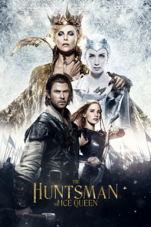

Alternativ: The Huntsman: Winter's War
 
 IMDB-Wertung: 6.1 / 10
IMDB-Wertung: 6.1 / 10  Metascore:
Metascore: 
Lange vor ihrer schicksalhaften Schlacht gegen Snow White regiert die böse Königin Ravenna (Charlize Theron) gemeinsam mit ihrer Schwester Freya (Emily Blunt) ihr Reich. Doch dann wird Eiskönigin Freya durch einen bitteren Verrat das Herz gebrochen und sie flieht aus ihrer Heimat in einen winterlichen Palast, in dem sie einsam ihr Dasein fristet und ein Heer aus kriegerischen Huntsmen um sich schart. Unter den ihr treu ergebenen Kämpfern sind auch Eric (Chris Hemsworth) und Sara, die jedoch gegen Freyas oberstes Gebot verstoßen, als sie sich ineinander verlieben: Niemand in ihrem Reich darf Liebe empfinden! Die Eiskönigin schickt das Liebespaar in die Verbannung. Als Eric und Sara Jahre später zu Ohren kommt, dass Ravenna in einem magischen Spiel gefangen und von Freya befreit wurde, werden ihre schlimmsten Befürchtungen wahr: Das Schwesternpaar will nun gemeinsam das gesamte Land unterjochen. Doch da haben die Königinnen ihre Rechnung ohne die verbannten Huntsmen gemacht…
Jahr: 2016
Dauer: 113 Minuten
FSK: 12
Land: USA Studio: Universal PicturesTonspuren: DTS - ,
Untertitel: Deutsch,
Auflösung: 1080p (1920x1080) Größe: 7761 MB
Genre: Action, Abenteuer, Drama, Fantasy
Regisseur: Cedric Nicolas-Troyan
Drehbuch: David Ives
Soundtrack:
Darsteller:
 Chris Hemsworth als The Huntsman / Eric
Chris Hemsworth als The Huntsman / Eric Charlize Theron als Ravenna
Charlize Theron als Ravenna Jessica Chastain als Sara
Jessica Chastain als Sara Emily Blunt als Queen Freya
Emily Blunt als Queen Freya Nick Frost als Nion
Nick Frost als Nion Rob Brydon als Gryff
Rob Brydon als Gryff Sheridan Smith als Mrs. Bromwyn
Sheridan Smith als Mrs. Bromwyn Alexandra Roach als Doreena
Alexandra Roach als Doreena Sope Dirisu als Tull
Sope Dirisu als Tull Sam Hazeldine als Leifr
Sam Hazeldine als Leifr Sam Claflin als William
Sam Claflin als William Sophie Cookson als Pippa
Sophie Cookson als Pippa Amelia Crouch als Young Pippa
Amelia Crouch als Young Pippa Fred Tatasciore als Mirror Man
Fred Tatasciore als Mirror Man Ralph Ineson als Barkeep
Ralph Ineson als Barkeep Lynne Wilmot als Bar Wench
Lynne Wilmot als Bar Wench Colin Morgan als Duke of Blackwood
Colin Morgan als Duke of Blackwood Robert Portal als King
Robert Portal als King David Mumeni als Lead Soldier
David Mumeni als Lead Soldier Osi Okerafor als Soldier
Osi Okerafor als Soldier Nick Donald als Soldier , uncredited
Nick Donald als Soldier , uncredited Karl Farrer als Huntsman Instructor , uncredited
Karl Farrer als Huntsman Instructor , uncredited Alex Gillison als Huntsman , uncredited
Alex Gillison als Huntsman , uncredited Anthony Milton als Freya's Guard , uncredited
Anthony Milton als Freya's Guard , uncredited Liam Neeson als Narrator , uncredited
Liam Neeson als Narrator , uncredited Sarah Sharman als Huntswoman , uncredited
Sarah Sharman als Huntswoman , uncredited Robert Wilfort als Nobleman
Robert Wilfort als NoblemanDatei: X:\2016(G-M)\Huntsman & the Ice Queen, The (2016, FSK12, 1920x1080) 3D.mkv seit 23.08.2016
Festplatte: HD 2016(A-Z)
 Es gibt insgesamt 164 Filme in der Gruppe '2016(G-M)'
Es gibt insgesamt 164 Filme in der Gruppe '2016(G-M)'